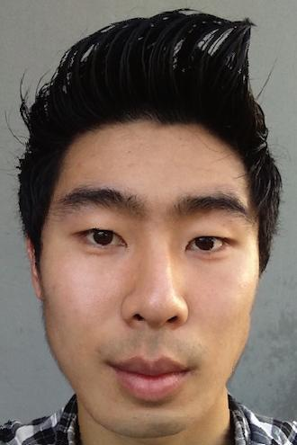

|
Warping myself into my friend Isaac |
 I'm now a Korean model |
Let's start off by briefly describing the mechanisms we will employ to perform the face morphs. A naive method to morph faces might just involve aligning two images by some pre-selected critical points and averaging them. This, however, may result in a ghosting effect where some features of the target image suddenly start to appear, resulting in some very poor transitions. An alternative approach is just to morph the features of the two images directly! To perform our face morphs, we start by selecting some feature points on both faces and computing an optimal Delaunay triangulation. Here's an example using our friends George and Bill.
|
George |
Bill |
|
George Triangulation |
Bill Triangulation |
After selecting the points (ensuring the select the corresponding feature points on both faces), we compute a Delaunay triangulation to minimize the "skinniness" of the triangles. Then, an average set of coordinates are computed by averaging each pair of corresponding points on both faces. Finally, we perform a linear transformation on each triangle from the starting and target images to the mean coordinates.
For each triangle, we must compute a unique transformation matrix. This is done by solving the equation for the transformation matrix M.
Once this is done, each pixel from the starting and target images are mapped to a new set of coordinates using this transformation matrix M. Notice the gaps in the image. These occur due to rounding of the transformed coordinates (which are usually non-integer values). To compensate, I performed a small amount of splatting and resampled from a Gaussian blurred image to fill in the remaining holes, which were few. And that's it! This was surprisingly straightforward and it produced some very excellent results.
|
George/Bill mean face |
George to Bill without interpolation |
George to Bill with interpolation |
|
Warping myself into my friend Isaac |
I'm now a Korean model |
With this amazing technique, we can now turn our attention to another interesting problem: finding the mean face of a population. Here, I used the Danes dataset made available by the Technical University of Denmark. All of the faces in the dataset were already conveniently labeled, so all that I had to do was use some of the similar techniques from our standard face morphing procedure. Using the coordinate data that they provided me, I started by averaging them together. Using the average coordinates as a reference point, I then transformed each face to fit these coordinates and averaged the resulting pixels together. The result is shown as follows.
|
Danish Mean |
Danish Face 1 to Danish Mean |
Danish Face 2 to Danish Mean |
|
Warping the Danish average to my face |
Making my face more "Danish" |
Making my face less "Danish" |
This actually turned out quite well! Afterwards, I had some fun morphing some individual faces to the average, and even played around with my own face.
|
Korean Average |
 Chinese Average |
White American Average |
 African American Average |
French Average |
|
More Korean |
 More Chinese |
More White American |
More African American |
More French |
|
Me |
Me |
Me |
Me |
Me |
|
Less Korean |
Less Chinese |
 Less White American |
Less African American |
 Less French |